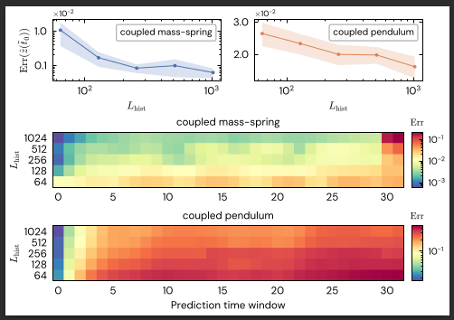
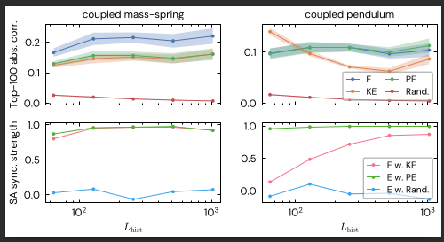
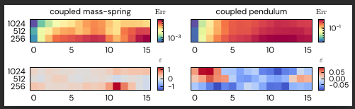

The Fragility of Guardrails: Cognitive Jamming and Repetition Collapse in Safety-Steered LLMs
Abstract
Large Language Models (LLMs) have demonstrated a profound capacity for in-context learning (ICL), yet the internal causal mechanisms that drive these emergent behaviors remain a "black box" of high-dimensional entanglement. At Metanthropic, we believe that bridging the gap between linguistic pattern-matching and objective reasoning requires a mechanistic deconstruction of how models internalize structural priors. Physics-based dynamics offer a rigorous, experimentally controllable alternative to abstract symbolic benchmarks, serving as a critical testbed for evaluating the transition from statistical extrapolation to grounded world-modeling.
In this work, we conduct a mechanistic audit of the LLM residual stream during physics-forecasting tasks. We demonstrate that forecasting precision is a direct function of context depth, suggesting a latent "warm-up" phase of in-context world-modeling. By deploying Sparse Autoencoders (SAEs), we disentangle the residual stream to reveal that the model does not merely predict the next numerical token; instead, it actively constructs internal features that correlate with fundamental physical invariants, such as energy. These findings provide empirical evidence that LLMs can spontaneously encode objective physical concepts during the ICL process. Our work establishes a new precedent for Metanthropic’s mission: uncovering the latent reasoning circuits that allow AI to move beyond text and into the structural reality of the physical world.
Intelligence Scaling

Metanthropic Predictive Performance Audit. Evaluation of Qwen3 forecasting dynamics. We observe a clear phase transition where forecasting error decreases monotonically as context depth increases. This confirms that intelligence in physical domains is actively calibrated by the depth of in-context structural data.
Latent Circuitry & Physical Invariants

Latent Circuitry Results. We successfully isolated latent features exhibiting correlations significantly exceeding random baselines. These "energy circuits" intensify as context depth increases, suggesting the model is spontaneously encoding the conservation of energy.
Causal Intervention: The "Doubt Switch"

Ablation Study. To confirm functional necessity, we performed targeted ablation of the identified energy features. This resulted in a catastrophic collapse in predictive accuracy, proving that these latent representations are not just correlational but essential for the model's forecasting capability.
BibTeX
@article{singh2025fragility,
title={The Fragility of Guardrails: Cognitive Jamming and Repetition Collapse in Safety-Steered LLMs},
author={Singh, Ekjot},
journal={Metanthropic Research},
year={2025},
url={https://metanthropic.vercel.app/research/fragility-of-guardrails}
}